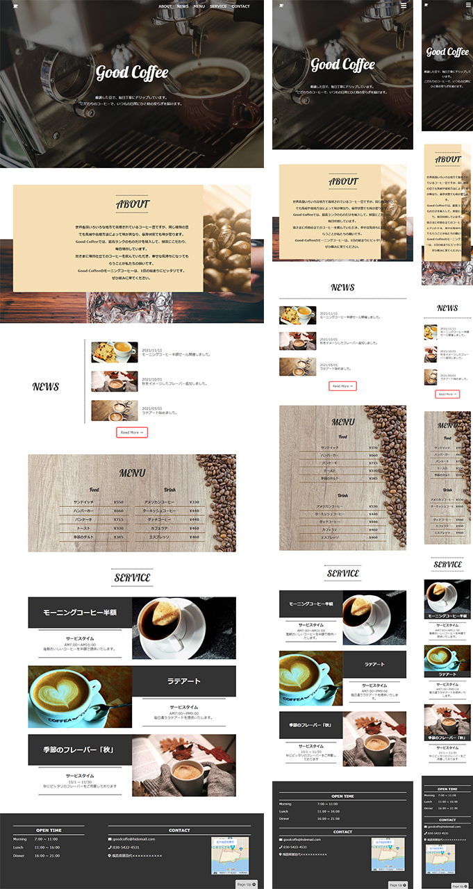

Welcome to
my portforio
ABOUT
- メッセージ
-
初めまして。
私のポートフォリオサイトに足を運んでいただきありがとうございます。
私は大学卒業後、病院専属のSEとして入社し、今年で10年になります。
主な業務は、FileMakerでの院内システム開発、SQLで抽出したデータの分析、電子カルテサーバーや部門サーバーの管理、ホームページの作成など、院内システム全ての管理者をしています。
10年間、管理者として勤務した経験を活かし、個人でWebページの作成を専門に行っております。
また、専属SEとして働いているほかに、家業である米農家としておいしいお米作りに励んでいます。
SEとしての経験に加え、失敗の許されない農家としての経験から、細部にまで気配りができるうえに、何かを作り、完成させるという喜びをたくさん知っています。
何かを作り上げる喜びを誰よりも知っている私だからこそ、皆様の納得のいくWebサイトが作れると思っております。
理想とするWebページを私と一緒に作成しましょう。 - 現在の仕事
- 病院専属SE・米農家
- 趣味
- ボルダリング・DIY・ウッドレジンアクセサリー作成
- 連絡先
- work.8a5x2a@gmail.com
- 使用ツール
-
- Photoshop
- Illustrator
- DX
- Premiere Pro
- Final Cut Pro
- VScode
SKILL

HTML5/CSS3を基本としてコーディングを行います。
サイトをセクションごとに区切り、見やすく保守管理しやすいように常に意識をしてコーディングを行っています。
細かい性格なので、インデックスのズレなどは絶対にありません。

HTML5/CSS3を基本としてコーディングを行います。
細かい性格なので、デザイン通りにコーディングすることが非常に得意です。
お客様のご希望のデザインに限りなく近くコーディングができます。
また、見ている人を飽きさせないアニメーション作りには自信があります。
1つのサイトで、動きが単調にならないよう様々なアニメーションを組み合わせてサイトを構築していきます。

フロントエンドとしては基本的な JavaScriptは実装可能です
クリックアニメーションやスクロールアニメーションはもちろん、スライドショーやスライダーも実装可能です。
動きをつけることで、見ている人を飽きさせないWebサイトを作ることができます。
また、現在は「React」も学習中です。今後「Reac」でのサービスも開始したいと考えています。

PhotoShopを利用して、簡単な写真の編集を行えます。
写真の修正や切り抜き、合成など基本的な編集は可能です。
私のポートフォリオサイトやオリジナルサイトで使用している写真は、9割が自分で写真を撮りに行き、加工編集したものです。

Illustratorを使用して、サイトのロゴやfaviconを作成することができます。
ご希望のイメージがあれば、サイトに馴染むよう作成いたします。
私のポートフォリオサイトのfaviconやロゴは、Illustratorでデザインし作成しています。

Webデザインは、adobeXDで行っています。
ポートフォリオサイト、オリジナルサイトともにXDでデザイン後にコーディングを行っています。
ご要望に応えられるよう丁寧にヒアリングし、デザインを固めていくことができます。
WORK
→サイトを見る
【My Portforio】
-ポートフォリオサイト-
私のポートフォリオサイトです。
レスポンシブにも対応するようコーディングしました。
HTML/CSSのコーディング技術や簡単なJavaScriptしか使用していませんが、動きのあるWebサイトが作れることがわかっていただけると思います。
- HTML/CSS
- JavaScript
- レスポンシブ対応
→サイトを見る
【GoodCoffee】
-デモサイト-
コーヒー豆にこだわった架空ショップをデザインからコーディングまで行いました。
コーヒー豆に自信があるショップで、モーニングコーヒーやラテアートが目玉のショップという設定で、朝から通いたくなる様なショップのサイトになるよう意識しました。
- HTML/CSS
- JavaScript
- レスポンシブ対応